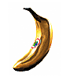

| |
| You may be wondering if there's any reason to collect the thousands of items found in DK 64. The answer is a big whopping YES!!! The ending to this epic adventure all depends on your final score, so get as many items as you can. Some items may not give you points, but they are extremely useful in other ways. Here's a quick guide to the many items in DK 64: | |
|  | GOLDEN BANANAS are priceless — you'll need them to access new areas and defeat K. Rool. |